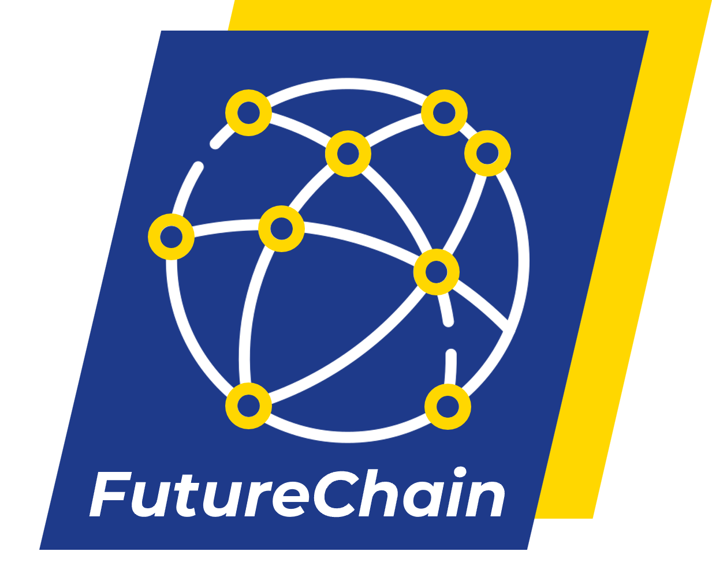

Compliant rails for the next financial system, and the products that run on them.
FutureChain is a Swedish blockchain platform engineered so regulators never see a transaction they shouldn't. ANTON is the first compliance product built on top — a working tool banks and PSPs use today.
ANTON
Compliance & financial-crime workspace. Live and sellable today — used by risk teams to screen, investigate and document.
Book a demo →FutureChain
Pre-mempool compliance, native ISO 20022, two-tier storage — the blockchain that prevents, instead of detects.
Read whitepaper →
The compliance layer arrives first.
Traditional blockchains record first and ask questions later. FutureChain checks every transaction before it can enter the chain — and ANTON is the workspace risk teams use to make those checks make sense.
One company. Two products.
Both built so finance can move without breaking the rules.
ANTON
The compliance & financial-crime workspace. Screening, case management and audit-ready documentation in one place — used by risk teams in regulated institutions today.
FutureChain
Compliance-first blockchain infrastructure. Heimdall pre-mempool screening, native ISO 20022 messages, two-tier storage — the payment rails ANTON will run on, and that any PSP can license.
Where do you want to start?
Most people land here for one of two reasons. Pick the one that fits — we'll route the conversation accordingly.